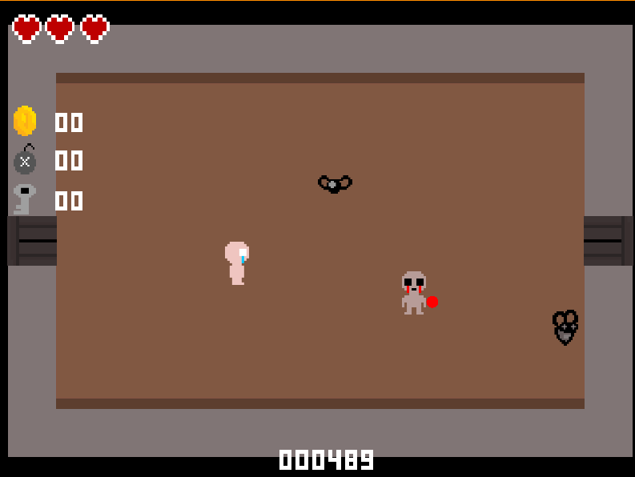
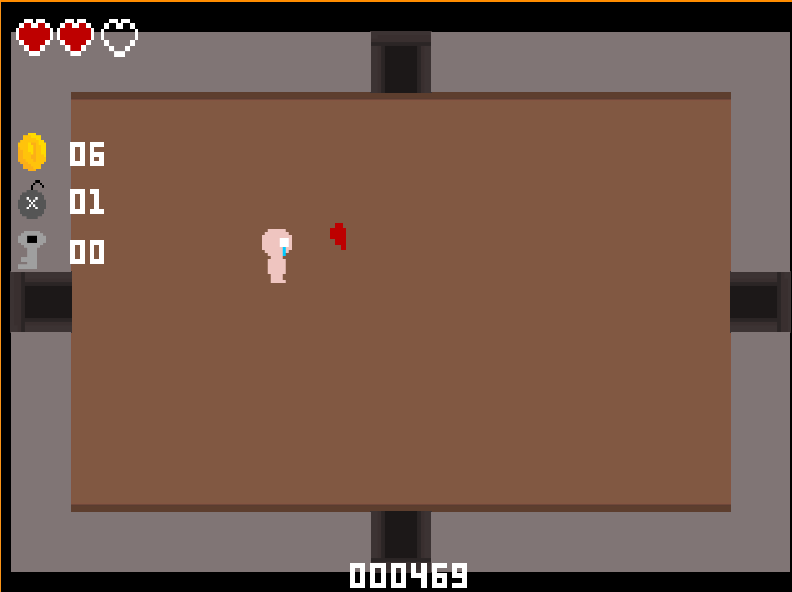
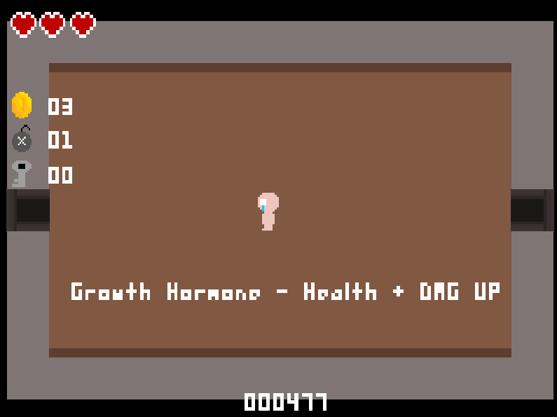
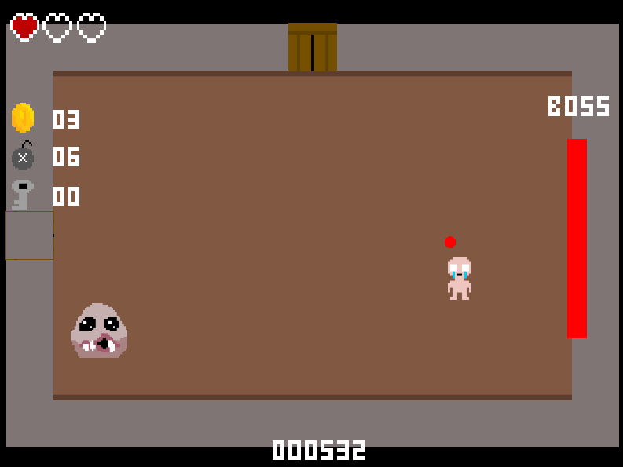

Binding Demake
An Atari2600 style version of The binding of Issac
The game demo was made for a university project to demake a game of our chosing. This meant we had to work under
certain restrictions for the project
The project was made in Unity game engine with Github for version control. There are features such as item pick ups
and power ups, enemy AI, dungeon generation, a boss encounter, and a couple methods of attack during combat.


The goal was to simplify the game down into a retro style, and make adaptations to the game where necessary to give that
retro feel. We also are trying to keep the core of the game, and as many features as feasible with the limitations, intact.

We also chose to use the atari screen resolution for our game in order to help create the feeling of the atari gameplay.
The demo inclused up to a boss fight, which also leaves room for expansion with more bosses to be added, further levels which
add more complex mazes, tougher enemies, additional power ups, and more playable characters just like the original game has.

The gameplay video:
Contributions & the team
My work on this project was getting the dungeon generation set up and ensuring that there are no bugs related to that and keeping map the generation is functional and performant. You can see the level layout being made on each playthrough in this video: You can also see the generation working through this video: